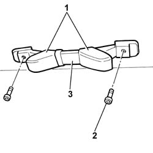
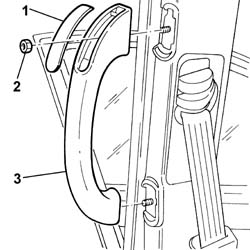

7065C30 INTERIOR L/H OR R/H GRAB HANDLE (ONE) - R+R
- Path
- Procedures > 70 FITTINGS > 7065 SAFETY BELTS AND ACCESSORIES > 7065C ACCESSORIES AND DECORATIONS > 7065C30 INTERIOR L/H OR R/H GRAB HANDLE (ONE) - R+R
- Kind
- repair procedure (removal / refitting; the operation number is the code)
- Applies to
- all engines; all production periods
- Interactive page
- https://sloeber94.github.io/elrnDB-fUlss/en/#/179007946
Applies to: all engines; all production periods
 Removing
Removing
 Refitting
Refitting- Proceed as described below in order to remove the grab handle on the roof.
1. Move the shields aside.
2. Undo the retaining bolts.
3. Remove the grab handle.

Applies to: all engines; all production periods
- Proceed as described below in order to remove the handle for access to the rear seats.
1. Release the shields on both sides using a suitable tool.
2. Undo the retaining nuts.
3. Remove the grab handle.

Applies to: all engines; all production periods
Refitting
Removing- Proceed as described below in order to refit the grab handle on the roof.
- Position the handle on the roof.
- Tighten the retaining bolts.
- Place the shields back in position.
- Proceed as described below in order to refit the handle for access to the rear seats.
- Position the handle.
- Tighten the retaining nuts.
- Reposition the shields.
Topics that link to this page (12)
- 5010B47 SIDE AIR DUCT TO REAR SEAT(ONE), LH OR RH - R R
- 5505A66 FRONT, CENTRE OR REAR SUN ROOF (ONE) NODE (DIGITAL NETWORK CONTROL UNIT) - R.R.
- 5580P24 CONNECT CONTROL UNIT SUPPORT - R.R.
- 5570T61 MULTI-FUNCTION AERIAL - R R
- 7040H10 ROOF PANEL LINING - R R
- 7040H16 ROOF PANEL LINING - R R
- 7040H36 CENTRAL TRIM LOWER ELEMENT - R R
- 7040H38 CENTRAL PILLAR UPPER ELEMENT - R R
- 7035A18 WINDSCREEN GLASS R R INCLUDING CLEANING OF HOUSING
- 7065A12 FRONT SEAT BELT (ONE), LH OR RH, WITH PRETENSIONER ON REEL - R.R
- 7065A18 FRONT SEAT BELT HEIGHT ADJUSTMENT (ONE), LEFT OR RIGHT - R.R.
- 7065A16 PANEL OF FRONT SEAT BELT HEIGHT REGULATOR LEFT OR RIGHT R R